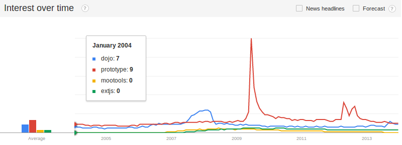
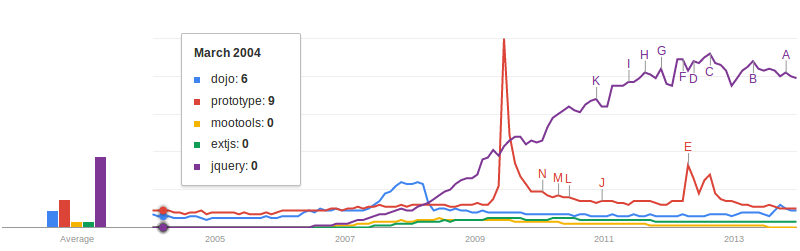
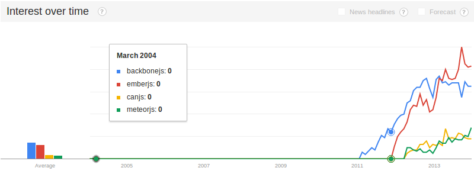
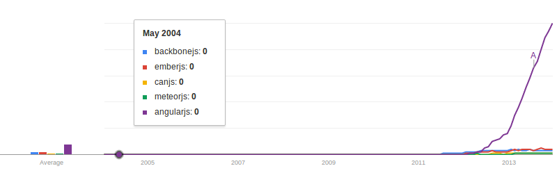
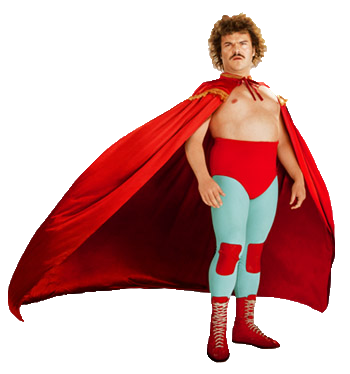

Angular - Very First Steps
by @imehesz
What is AngularJS?
It is an open-source JavaScript framework, maintained by Google, that assists with running single-page applications.
Its goal is to augment browser-based applications with model–view–controller (MVC) capability, in an effort to make both development and testing easier.
from Wikipedia
Why AngularJS?
- Dynamic HTML
- Super-easy to understand
- Quick to learn and use - at first ;)
- Works well with other libs
- Lots of documentation and resources
AngularJS is the new jQuery
AngularJS is the new jQuerymaybe?
JS Lib stats

JS Lib stats

JS MV? stats

JS MV? stats

Resources
- Main site - angularjs.org
- Documentation - docs.angularjs.org
- Training video tutorials (FREE + paid) - egghead.io
- Useful modules from - ngmodules.org
- Or build a real Fantasy Football clone with - thinkster.io
- Bunch of videos on YouTube
CODE!
- Example 1 - Hello [World]! (click 4 plnkr)
- Example 2 - No code, No problem (click 4 plnkr)
- Example 3 - A TODO app ... of course (click 4 plnkr)

Credits
- ImpressJS - a JS presentation awesomeness
- Nacho Libre - a monk follows his dream and dons a mask to moonlight as a Luchador.
Thank You!